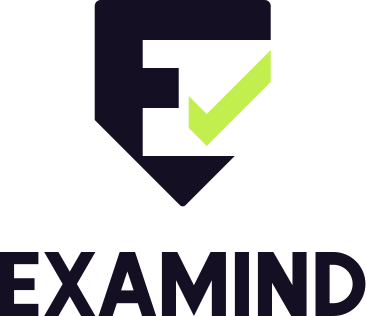

Dilema nyata sekolah dan pendidik di era digital: beban administratif yang melelahkan dan integritas ujian yang sulit diawasi secara adil.
Guru menghabiskan waktu berhari-hari membaca esai panjang secara manual satu per satu tanpa standardisasi rubrik yang seragam.
Ujian online biasa rentan perpindahan tab, joki, dan area meja atau perangkat kedua yang luput dari pandangan webcam standar.
Sistem proctoring otomatis sering mendiskualifikasi siswa secara sewenang-wenang lewat algoritma hitam tanpa hak verifikasi bagi guru.
Menghubungkan kecerdasan generator AI dengan kedaulatan mutlak guru dalam menguji dan menilai.
Menyusun paket soal pilihan ganda lengkap dengan distractor analysis dan butir esai berbobot langsung dari materi ajar atau silabus guru.
Pengawasan komprehensif memadukan webcam laptop untuk presensi wajah dan kamera smartphone sekunder untuk sudut meja dan lingkungan sekitar.
Koreksi esai terstruktur berdasarkan rubrik pedagogis (Konsep, Argumen, Terminologi, Kejelasan). AI memberi saran skor, keputusan tetap di tangan guru.
Memberikan efisiensi kerja tanpa mengorbankan martabat siswa maupun wewenang guru.
Guru terbebas dari rutinitas koreksi manual yang melelahkan. Waktu berharga guru dapat dialihkan kembali sepenuhnya untuk mendidik dan membimbing siswa.
Bukti visual snapshot digital terverifikasi untuk setiap potensi pelanggaran. Didukung Autosave lokal IndexedDB dan sinkronisasi berkala 30 detik agar jawaban tetap aman dari putus koneksi.
Mematuhi UU Pelindungan Data Pribadi dengan pembersihan otomatis snapshot setelah 60 hari. Ekspor Berita Acara Ujian resmi dan Transkrip Nilai instan format PDF.

Tinggalkan cara lama. Beralih ke platform ujian cerdas berbasis AI dengan prinsip Human-in-the-Loop.